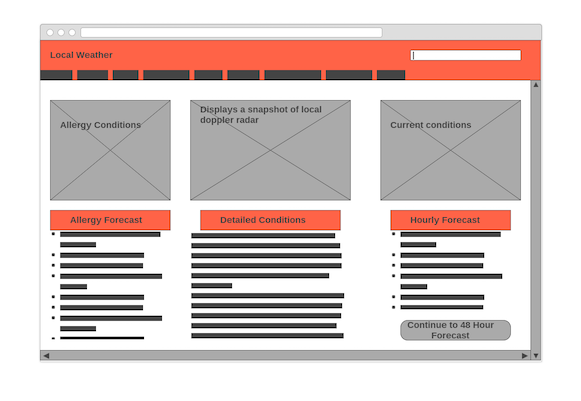

Initial Design for Weather Page
Web Browser Wireframe
Target Audience
1. The target demographic would be men in their early thirties and up with an income of around fifty thousand dollars a year and up, with a tradeschool education or higher, looking at the site from anywhere in the country. 2. The site met the needs of the visitor as it was clear and concise to use as well as making the most important information very prominent and easy to find. 3. The content was organized in a way that was easy to find for potential users 4. WHat made the site enjoyable to use were the excellent use of contrast, simplicity, and excellent visualizatuions of their products being used. 5. The site worked extremely well on my mobile device.
Wireframes
